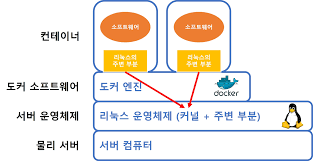

컨테이너
container
도커에 의해 생성된 운영체제의 다른 영역과 독립된 공간.
이미지를 통해 생성한다. 반대로, 기존의 컨테이너로부터 이미지를 추출할 수 있다. 이를 통해 변경사항을 빠르게 배포할 수 있다.

운영체제는 커널 + 주변 영역의 구조로 이루어져 있는데, 컨테이너에는 주변 영역만 포함되고 커널은 호스트의 것을 빌려쓴다. 이를 통해 가벼움을 확보할 수 있다.
용량이 허용하는 한 컨테이너는 얼마든지 올릴 수 있다.
일반적으로 컨테이너는 한 번 생성한 것을 오랫동안 유지보수하기보다는, 오래된 컨테이너는 폐기하고 업데이트가 반영된 최신 이미지를 사용하여 새로운 컨테이너를 만들어 쓴다.
이는 애초에 도커가 여러 개의 컨테이너를 동시에 돌리는 상황을 가정하여 만들어졌기 때문으로, 이러한 상황에서는 업데이트 사항을 컨테이너 하나하나에 일일히 적용하기 보다는 새로운 컨테이너를 사용하는 방식이 비용이 적다.
이러한 컨테이너의 제작 -> 실행 -> 종료 -> 폐기 -> 제작 -> ... 과정을 컨테이너의 생애 주기라 부른다.
컨테이너에 stop, start 등의 명령어를 사용할 때 도커 엔진은 해당 명령을 수행하기 위해 해당 컨테이너의 pid 1번에 signal을 전달한다. 컨테이너의 pid 1번 프로세스가 종료하면, 도커 엔진은 해당 컨테이너가 동작을 마친 것으로 간주하고 해당 컨테이너를 exited 상태로 만든다. 주의할 점은 도커는 foreground로만 동작하는 프로세스만 인식한다는 것이다. background로 ENTRYPOINT를 지정하면 해당 컨테이너가 즉각 종료되어 버릴 수 있다.
따라서 서버(ex. nginx) 같이 무한히 실행되어야 하는 프로세스의 경우, foreground로 실행시켜야 해당 서비스를 제공하는 컨테이너가 지속적인 생명력을 가질 수 있다.
본 문단은 chatgpt 발 정보이므로 오류가 있을 수 있습니다.
참고자료